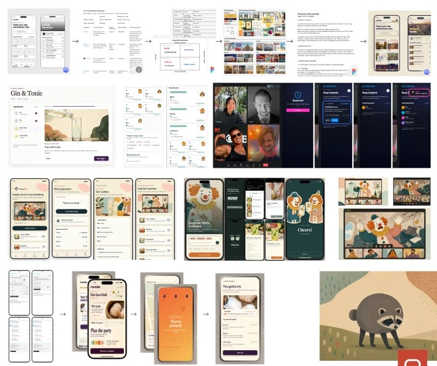

Oracle Health
Director, User Experience Design, 2024 to present.
I joined Oracle Health to lead the design of the core task-management experience for an AI-native EHR. It started with ambulatory clinical workflows and grew into one universal pattern for every role across the whole product. Out of that work I formed Experience Core, our platform design team, and built its AI workflows with engineering, which took concept-to-testable-prototype from weeks to days. That work produced eight AI patent applications I am a named inventor on.
Most of this is unreleased, so the cases are told through method and diagrams: no screens, no internal names, no customers.
From Inbox to Action List

It started as a fix for the clinician inbox, a twenty-year-old design where results, refills, documents, and requests each sat in their own folder. Looking closer, the inbox was one instance of a platform-wide habit: every product team had built its own worklist, each with different features, rules, and edge cases.
We flattened the inbox into a single “Action List” of the non-negotiable tasks a person owns that day, auto-triaged by role and by user. Once the list could absorb anything that needed doing, there was no reason for the other lists to exist.
Action List became the one universal worklist pattern across the whole EHR: every role, every workflow, from ambulatory, acute, patient administration, rev cycle and reimbursements. One place to see the work and do it, instead of a different queue in every corner of the product.
Clickthrough demo link to come
Experience Core, and the AI workflow behind it
A platform design team that did not exist, and a workflow that cut concept-to-prototype from weeks to days.
Every product organization designed its own lists, panels, and layouts. A universal pattern needs a universal owner. I made the case for Experience Core, staffed it, and aligned it in sequence: pillar leads, then SVP peers, then the top.
Thirty-four inherited patterns, no structure. I grouped them by the clinician's journey and gave each designer a stretch of journey rather than a pile of components.
The comp stopped being the deliverable; the rules did. Components get guidelines; layouts and patterns get skills, which carry the judgment of when, when not, and how. Intent in, working prototype out.
A written definition of done, three gates and a release approval, ended the misalignment that kept layouts from landing. WCAG 2.1 AA is a gate, not a hope.

- My role
- Proposed the team, built it, lead it. Wrote the first skills and ran the learning day.
- Next time
- The definition of done before the first layout, not after the first misalignment.
AI-native UX: where the system speaks, and where it stops
One set of rules for how, and how much, the system talks to a clinician.
The system has something to say on nearly every screen, and a clinician has to tell a fact from a suggestion from a to-do. I drew the line: notifications assert facts, guidance proposes decisions, the worklist holds work.
I authored the notification pattern: one object model, a five-class severity taxonomy, an interruption ladder from ambient to a person. Alarm fatigue is a patient-safety risk, so the system interrupts only as much as the situation needs.
The system drafts, the clinician decides. A spoken list of problems, medications, and orders is teed up in one review space, signed once, and committed in the right order. Accept, edit, reject, escalate: four verbs on every AI surface.
Guided workflows are one pattern with two modes, structured and generative; the difference is who authors the sequence, and when. Several of the eight patent applications come from this thinking. The filings are confidential, so this page describes the reasoning, not the claims.
- My role
- Program owner for the notification pattern; design lead for AI output across the clinical workflows.
- Next time
- Name the modes earlier. "AI mode" survived as a label too long, and teams designed to the label.